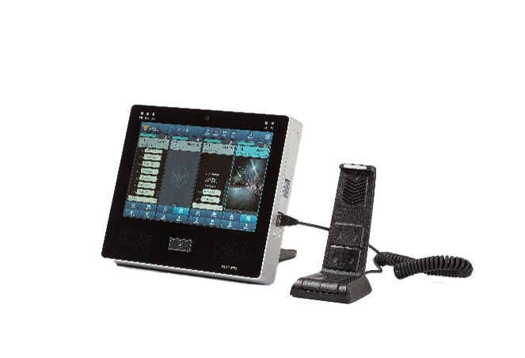
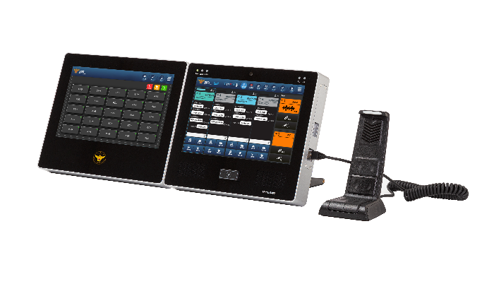
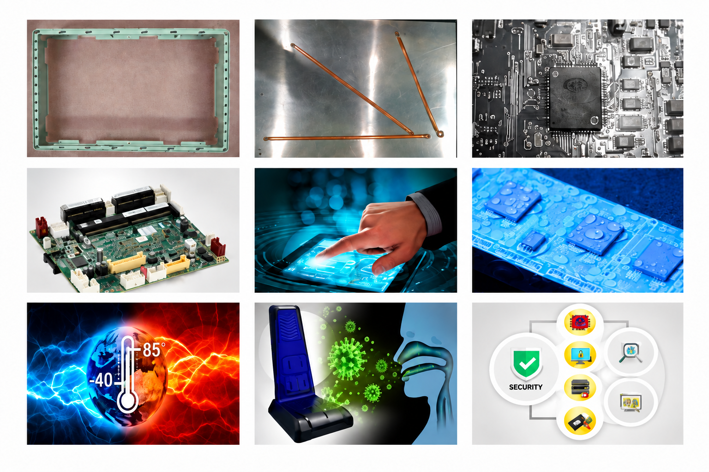
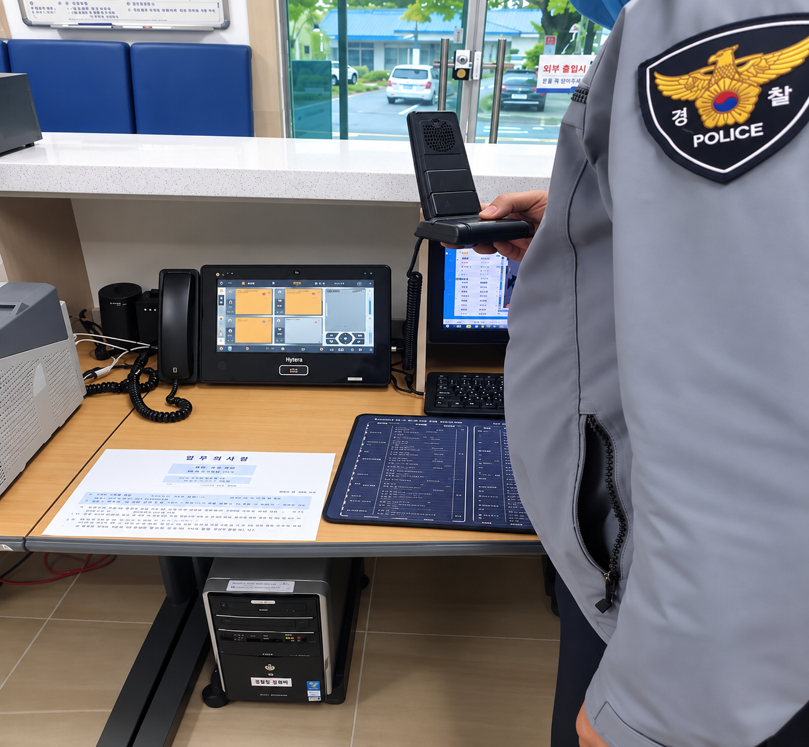
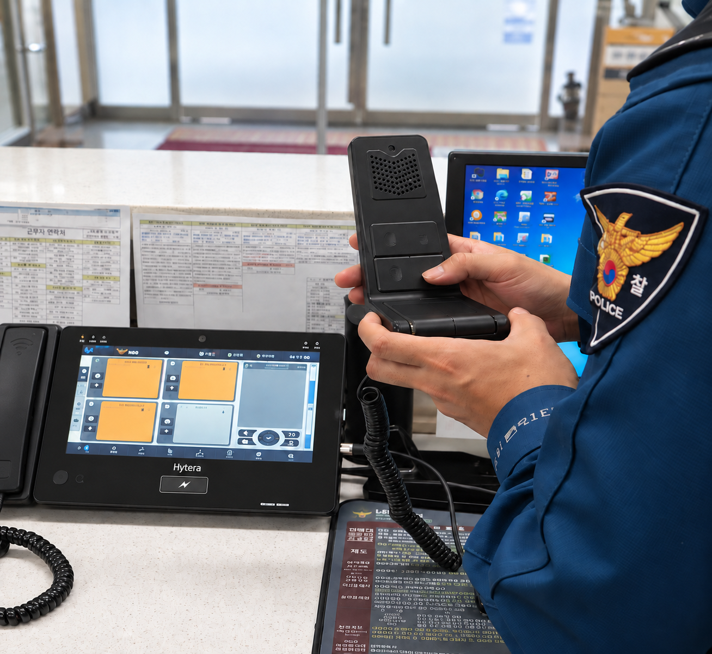

MCPTT 음성·영상·문자 송수신 지원
MCPTT 음성/영상/문자 송∙수신 기능의 무선 단말 및 소형 지령대 기능 유.무선 솔루션
MISSION-CRITICAL LTE FIXED STATION
S380은 재난안전통신망 환경을 위한 고정형 통신 단말기입니다.
MCPTT 기반 음성·영상·문자와 VoLTE, 유·무선 통신 및
관제 기능을 하나의 시스템에서 운용합니다.
KEY FEATURES
MCPTT 음성/영상/문자 송∙수신 기능의 무선 단말 및 소형 지령대 기능 유.무선 솔루션
높은 등급의 LTE Cat.22 속도를 커버, 7nm 공정으로 CP CHIP 장착
MCX기반의 솔루션 지원 R.15 지원 엔진
다 채널 동시지원 영상코덱 –H.265 하드웨어 비디오카드 지원
IMS/VoLTE/ViLTE SIP 엔진이 탑제된 미디어엔진
UHD 필터탑재 (자체개발한 수신보강형 안테나 솔루션 탑재)
FLEXIBLE CONFIGURATION
운용 환경과 목적에 따라 모듈을 구성하고,
최대 3-Way 화면까지 확장할 수 있습니다.

송수화기 탈부착이 가능한 확장 구조로 필요에 따라 비화통화 환경을 구성합니다.
일체형 오디오 장치를 적용한 공간 절약형 기본 구성입니다.

전용 액정 패널을 추가해 다양한 관제 기능으로 확장할 수 있습니다. 보조 모니터: 퀵 다이얼, GIS Map화면, SMS 전송
WHY S380 · VERIFIED & SECURE
구름플랫폼은 구름OS와 구름 브라우저, 구름 보안 프레임워크와 중앙관리솔루션(GPMS)으로 구성. 구름 브라우저는 오픈소스인 크로미엄을 기반. 보안 프레임워크는 국보연에서 개발한 4단계 보안기술(신뢰부팅, 운영체제 보호, 실행파일 보호, 브라우저 보호)을 이용한 보안성을 제공합니다.
WHY S380 · INDUSTRIAL QUALITY
高 품질 원재료를 기반으로 생산된 제품입니다.

WHY S380 · PROVEN IN THE FIELD
실제 경찰 통신 환경에서 운용되며, 현장 중심의 통신 성능과 안정성을 검증해왔습니다.


- 독도 · 울릉도 · 추자도 파출소
- 전국 주요 지구대 · 파출소
- 사건 · 사고 집중 관제
- 실시간 통화량 최다, 사용량최고
- 지속적인 통신이 필요한 현장을 위한 365일 상시 운용 설계
TECHNICAL SPECIFICATIONS